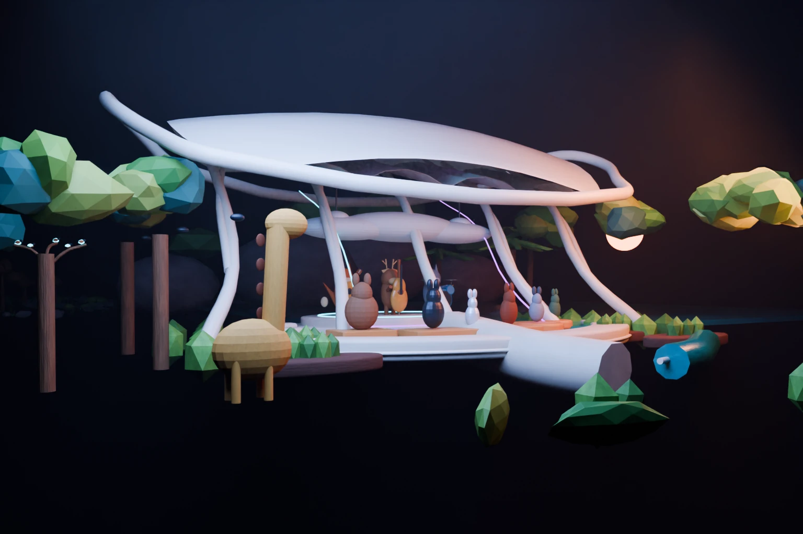
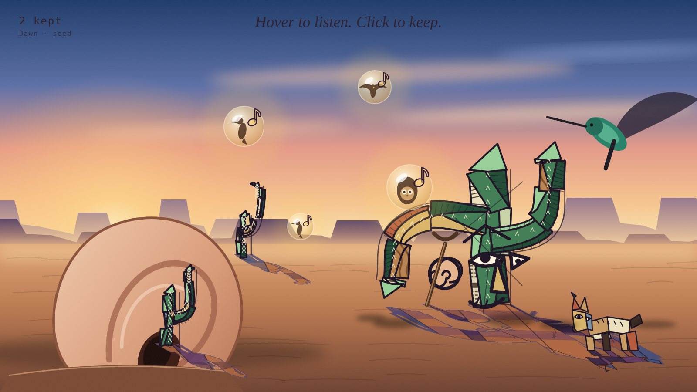

An open field of practice
AI for
interdisciplinary
design portfolio.
Welcome to a new field—a structured environment for new experiences.
Explore the projects ↓A small experiment / 00
Make room for a little play.
Drag a cow. Make a sound. Find a new arrangement.
Keyboard: Tab to a cow, arrows to move, Enter to moo.
Selected projects
Three ways into the field / 01—03
01 / Music × image
Mind the Traffic
From a photograph to an album cover.

02 / Space × environmentFuture Seaside
Future Seaside
Outdoor Music Space
A speculative place for listening.

03 / Sound × game
Mirage Bloom
A slow browser game about listening, where sounds grow a saguaro. Some are mirages, and you learn to tell what is real.
A meeting point for interdisciplinary design, music, and environmental study.